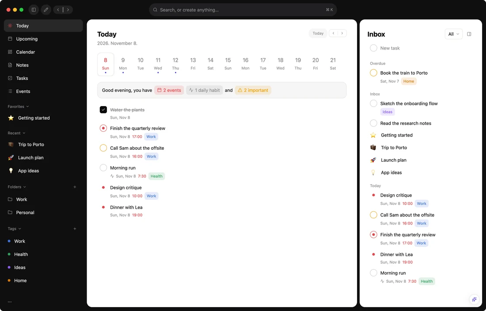
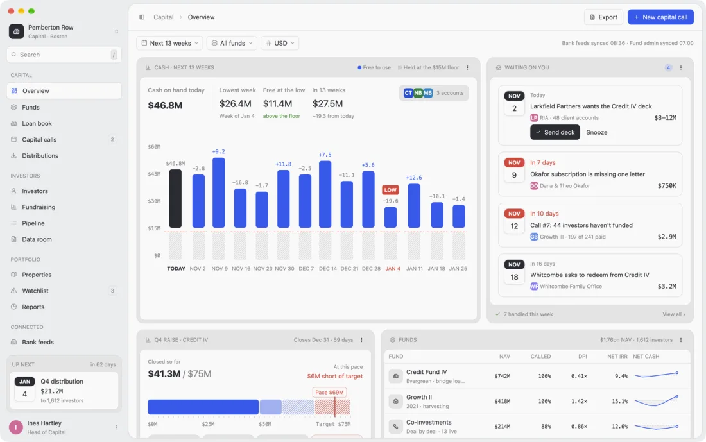
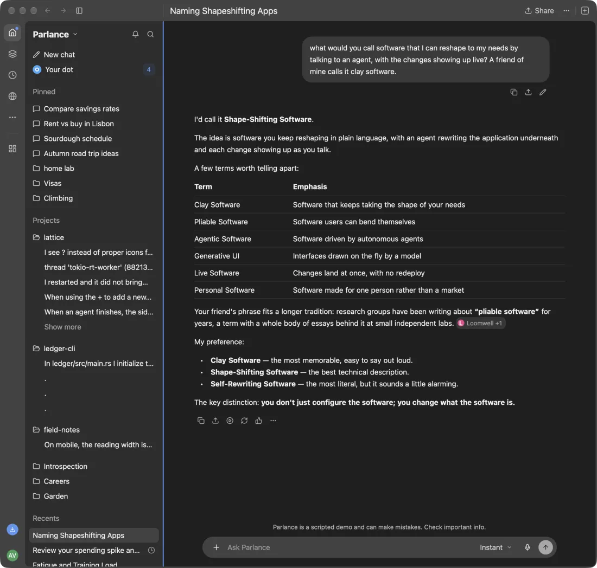

A starter for native desktop apps
The whole window, in a language you can save.
Rust and GPUI draw it, check it, and keep it safe. Every panel, split and status bar is a Luau file that reloads as you type.

app/mods/.Laid out in Luau
A shell places regions and mods fill them. Each mod is one file with its own state, init, update and view.
Styled like the web
Rules by element type and class, hover states and transitions, in style.luau. Themes restyle terminals too.
Components
Shared pieces mods use, each with a live preview in the Components window.
Terminals
Your login shell on alacritty_terminal or Ghostty's libghostty-vt.
Providers
Sandboxed WebAssembly or plain processes, for data Luau can't reach.
An inspector
Pick anything in the window and tell an agent which file and line drew it.
A sandbox
No files, network or processes from Luau; a memory cap and an instruction budget.
Your folder over the app
~/.config/moonframe holds your mods; updates never touch it.
Apps as profiles
Whole other apps install beside the starter, each with its own shell and theme.
“Say ‘add a list of branches here,’ and watch it appear.”

Daybook. A planner with today, an inbox, a month.

Ledger. Cash against a floor, and funds with their curves.

Parlance. A desktop chat app with streaming answers.